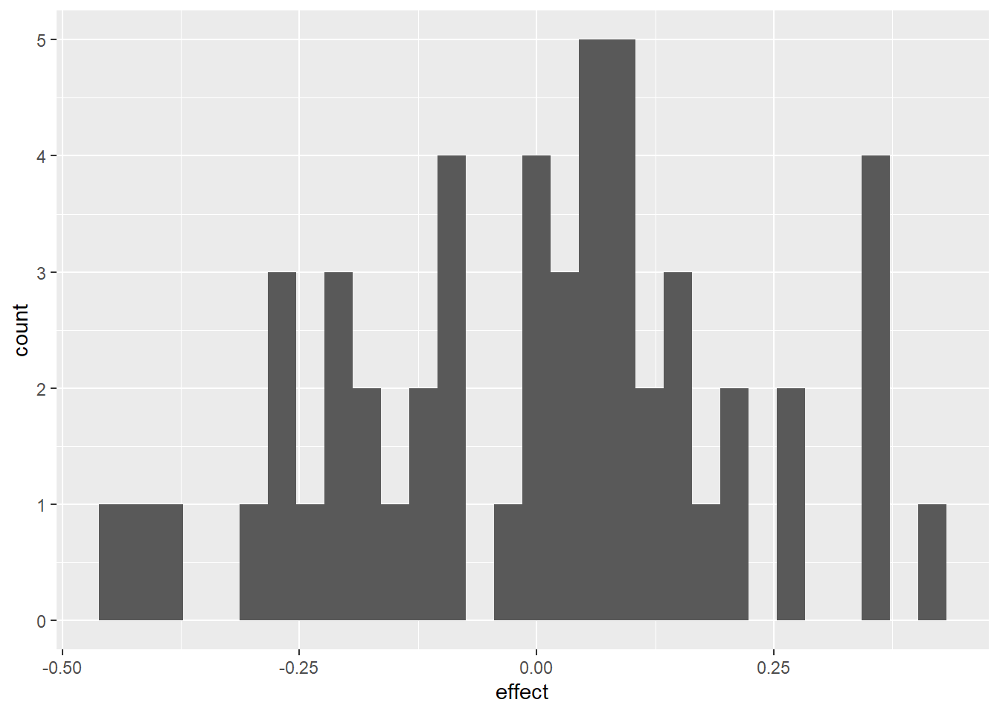
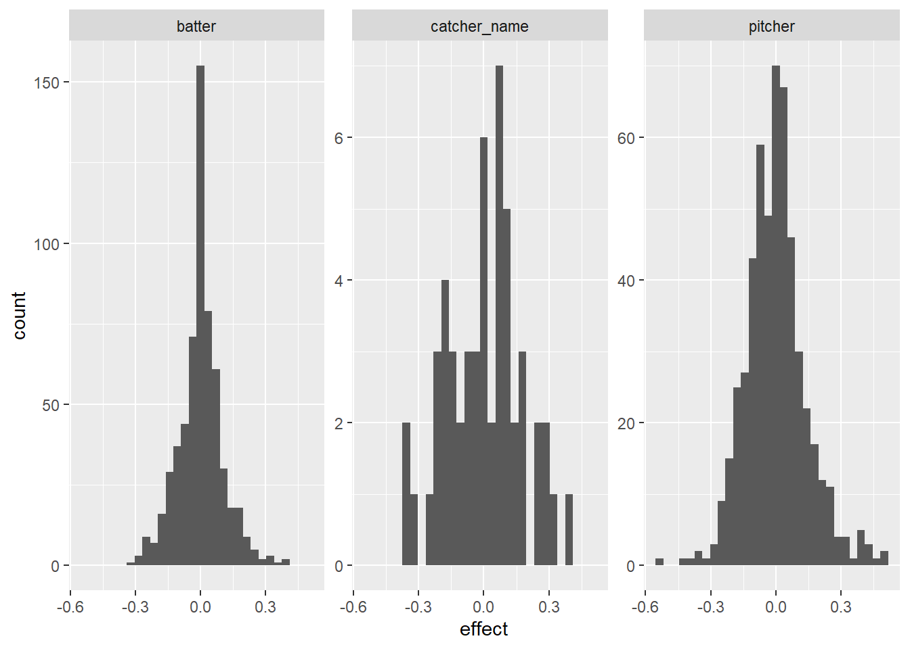

library(tidyverse)
library(knitr)
library(broom)
library(mgcv)
# Retrieve pitch level data from June 2019. (See previous lesson.)
pitches <- readRDS("statcast_june_2019.rds")
# Add catcher's name to the pitch data from the MLB master list.
mlbIDs <- baseballr::chadwick_player_lu() |>
mutate(
mlb_name = paste(name_first, name_last),
mlb_id = key_mlbam
)
pitches <- pitches |>
left_join(select(mlbIDs, mlb_name, mlb_id),
by = c("fielder_2" = "mlb_id")) |>
rename(catcher_name = mlb_name)
#
# pitches_taken_subset <- pitches |>
# filter(description %in% c("ball", "called_strike"))MA388 Sabermetrics: Lesson 16
Catcher Framing Ability Random Effects
Last class, we were primarily comparing called strikes for Buster Posey and Yadier Molina. Today we’ll look at more catchers from June 2019.
Random Effects Models
Thus far, we investigated the difference between Molina and Posey on called strikes. In doing so, we did the following:
Compared their called strike proportions (why isn’t this that useful?)
Estimated the log odds ratio for a called strike after adjusting for pitch location (why is this better?)
But, what we really want to know is not if Molina is better than Posey, but if catchers, in general, have a meaningful effect on called strikes.
Based on what you’ve learned so what far, you would probably fit a fixed effects model like this:
\[\log\left(\frac{\pi_i}{1-\pi_i}\right) = \beta_0 + \beta_1 \text{catcher}_{1,i} + \ldots + \beta_{m-1}\text{catcher}_{m-1,i} + f(\text{plate\_x}_i,\text{plate\_z}_i)\] where \(\text{catcher}_{j,i}\) is an indicator of whether the catcher for pitch \(i\) is \(\text{catcher}_j\).
How many parameters are there in the model above?
Let’s fit the model for all catchers who caught at least 1000 pitches:
catcher_list <- pitches |>
group_by(catcher_name) |>
summarize(n = n()) |>
filter(n >= 1000) |>
pull(catcher_name)
pitches_taken <- pitches |>
filter(catcher_name %in% catcher_list,
description %in% c("called_strike", "ball")) |>
mutate(called_strike=description=='called_strike')
strike_mod_all <- gam(called_strike ~ s(plate_x, plate_z) + catcher_name,
family = "binomial", data = pitches_taken)
summary(strike_mod_all)
Family: binomial
Link function: logit
Formula:
called_strike ~ s(plate_x, plate_z) + catcher_name
Parametric coefficients:
Estimate Std. Error z value Pr(>|z|)
(Intercept) -6.622732 1.142689 -5.796 6.8e-09 ***
catcher_nameAustin Hedges 0.504288 0.202702 2.488 0.01285 *
catcher_nameBobby Wilson 0.029825 0.245906 0.121 0.90346
catcher_nameBrian McCann 0.056919 0.213540 0.267 0.78982
catcher_nameBryan Holaday -0.256764 0.220585 -1.164 0.24442
catcher_nameBuster Posey -0.257745 0.215861 -1.194 0.23247
catcher_nameCam Gallagher 0.056798 0.241117 0.236 0.81377
catcher_nameCarson Kelly 0.144979 0.199848 0.725 0.46818
catcher_nameChance Sisco -0.473557 0.208069 -2.276 0.02285 *
catcher_nameChris Iannetta -0.390696 0.218313 -1.790 0.07352 .
catcher_nameChristian Vázquez 0.443846 0.196247 2.262 0.02372 *
catcher_nameCurt Casali -0.190821 0.205608 -0.928 0.35337
catcher_nameDanny Jansen 0.016908 0.198817 0.085 0.93223
catcher_nameDustin Garneau -0.037663 0.242865 -0.155 0.87676
catcher_nameElías Díaz -0.571133 0.191465 -2.983 0.00285 **
catcher_nameGary Sánchez 0.085060 0.192510 0.442 0.65860
catcher_nameGrayson Greiner -0.337244 0.259916 -1.298 0.19446
catcher_nameJ. T. Realmuto -0.052478 0.192935 -0.272 0.78562
catcher_nameJames McCann -0.548860 0.200074 -2.743 0.00608 **
catcher_nameJason Castro -0.059725 0.208673 -0.286 0.77471
catcher_nameJeff Mathis -0.209227 0.204925 -1.021 0.30726
catcher_nameJohn Hicks -0.360805 0.218333 -1.653 0.09842 .
catcher_nameJonathan Lucroy -0.434742 0.197432 -2.202 0.02767 *
catcher_nameJorge Alfaro 0.302585 0.214719 1.409 0.15877
catcher_nameJosh Phegley -0.418253 0.191059 -2.189 0.02859 *
catcher_nameKevin Plawecki 0.555562 0.250585 2.217 0.02662 *
catcher_nameKurt Suzuki -0.230635 0.212513 -1.085 0.27780
catcher_nameLuke Maile -0.340531 0.219758 -1.550 0.12124
catcher_nameManny Piña 0.532831 0.242093 2.201 0.02774 *
catcher_nameMartín Maldonado -0.099924 0.196022 -0.510 0.61022
catcher_nameMatt Wieters -0.330689 0.229847 -1.439 0.15023
catcher_nameMike Zunino -0.040333 0.206641 -0.195 0.84525
catcher_nameMitch Garver -0.025173 0.214782 -0.117 0.90670
catcher_nameOmar Narváez -0.390007 0.195070 -1.999 0.04557 *
catcher_namePedro Severino -0.519941 0.201742 -2.577 0.00996 **
catcher_nameRoberto Pérez 0.101593 0.198618 0.512 0.60900
catcher_nameRobinson Chirinos -0.317570 0.191141 -1.661 0.09662 .
catcher_nameRussell Martin 0.224721 0.218288 1.029 0.30326
catcher_nameSandy León 0.090762 0.222809 0.407 0.68375
catcher_nameStephen Vogt -0.200628 0.217149 -0.924 0.35553
catcher_nameTim Federowicz 0.055533 0.220292 0.252 0.80097
catcher_nameTom Murphy 0.251783 0.211580 1.190 0.23404
catcher_nameTomás Nido 0.084321 0.228749 0.369 0.71241
catcher_nameTony Wolters -0.300176 0.196645 -1.526 0.12689
catcher_nameTravis d'Arnaud -0.117914 0.214300 -0.550 0.58216
catcher_nameTucker Barnhart -0.002438 0.222311 -0.011 0.99125
catcher_nameTyler Flowers 0.436709 0.213844 2.042 0.04113 *
catcher_nameVíctor Caratini 0.111638 0.251220 0.444 0.65676
catcher_nameWillson Contreras -0.077984 0.191878 -0.406 0.68443
catcher_nameWilson Ramos -0.055399 0.196864 -0.281 0.77840
catcher_nameYadier Molina -0.106296 0.199854 -0.532 0.59482
catcher_nameYan Gomes -0.126179 0.209642 -0.602 0.54725
catcher_nameYasmani Grandal 0.156120 0.193919 0.805 0.42077
---
Signif. codes: 0 '***' 0.001 '**' 0.01 '*' 0.05 '.' 0.1 ' ' 1
Approximate significance of smooth terms:
edf Ref.df Chi.sq p-value
s(plate_x,plate_z) 27.26 28.01 8062 <2e-16 ***
---
Signif. codes: 0 '***' 0.001 '**' 0.01 '*' 0.05 '.' 0.1 ' ' 1
R-sq.(adj) = 0.757 Deviance explained = 72.9%
UBRE = -0.65503 Scale est. = 1 n = 54411What should we conclude from this model?
What are some limitations of a fixed effects approach for this question?
Random effects model the individual catcher effects as normally distributed with mean 0 and variance \(\sigma^2\). There is only one parameter to fit. As a bonus, it has a nice interpretation…the larger the variance, the larger the effect of the catcher (why?). Here is the model:
\[\log\left(\frac{\pi_i}{1-\pi_i}\right) = \beta_0 + \text{catcher}_j + f(\text{plate\_x}_i,\text{plate\_z}_i)\] where \(\text{catcher}_j\) is normally distributed with mean 0 and variance \(\sigma^2\).
How many parameters are in this model?
Why is this an improvement?
We can incorporate this using the lme4 package. Note, we’ll do this slightly differently by first fitting the location model and then using the predictions from that model in a second model with the random effect.
model_location <-gam(called_strike ~ s(plate_x, plate_z),
family = "binomial",
data = pitches_taken)
pitches_taken <- model_location |>
augment(type.predict = "response",
newdata = pitches_taken) |>
rename(strike_prob = .fitted)
# Now fit a random effects model adjusting for pitch location.
library(lme4)
model_random_effects_catcher <- glmer(called_strike ~ strike_prob + (1|catcher_name),
family = "binomial",
data = pitches_taken)
summary(model_random_effects_catcher)Generalized linear mixed model fit by maximum likelihood (Laplace
Approximation) [glmerMod]
Family: binomial ( logit )
Formula: called_strike ~ strike_prob + (1 | catcher_name)
Data: pitches_taken
AIC BIC logLik -2*log(L) df.resid
20889.2 20916.0 -10441.6 20883.2 54408
Scaled residuals:
Min 1Q Median 3Q Max
-6.9648 -0.1583 -0.1373 0.1717 8.1197
Random effects:
Groups Name Variance Std.Dev.
catcher_name (Intercept) 0.05715 0.2391
Number of obs: 54411, groups: catcher_name, 53
Fixed effects:
Estimate Std. Error z value Pr(>|z|)
(Intercept) -3.89584 0.04674 -83.36 <2e-16 ***
strike_prob 7.48119 0.05805 128.88 <2e-16 ***
---
Signif. codes: 0 '***' 0.001 '**' 0.01 '*' 0.05 '.' 0.1 ' ' 1
Correlation of Fixed Effects:
(Intr)
strike_prob -0.572# Get random effects for catchers.
catcher_effects_adj <- model_random_effects_catcher |>
ranef() |>
as_tibble() |>
transmute(id = levels(grp), effect = condval) |>
arrange(desc(effect))
catcher_effects_adj |> head(5)# A tibble: 5 × 2
id effect
<chr> <dbl>
1 James McCann 0.432
2 Tony Wolters 0.366
3 Wilson Ramos 0.364
4 Jason Castro 0.359
5 Jorge Alfaro 0.343catcher_effects_adj |>
ggplot(aes(x = effect)) +
geom_histogram()
Interesting - I guess? We’re now faced with the same question we always have in statistics: I see a statistic, a non-zero difference, a non-zero variance, etc., but is it significant? What are some ways we can go about determining significance?
Let’s use a nested model approach and add a couple more explanatory variables. Right now we’ve only let the catcher and the pitch location try to explain called strike determinations. If we introduce other variables that provide the same or complementary information, we might find the importance of catcher in the model to decrease. Sounds like ANOVA, right?
model_random_effects_trio <- glmer(called_strike ~ strike_prob +
(1|pitcher) + (1|batter) + (1|catcher_name),
family = "binomial",
data = pitches_taken)
summary(model_random_effects_trio)Generalized linear mixed model fit by maximum likelihood (Laplace
Approximation) [glmerMod]
Family: binomial ( logit )
Formula: called_strike ~ strike_prob + (1 | pitcher) + (1 | batter) +
(1 | catcher_name)
Data: pitches_taken
AIC BIC logLik -2*log(L) df.resid
20829.2 20873.7 -10409.6 20819.2 54406
Scaled residuals:
Min 1Q Median 3Q Max
-8.0613 -0.1588 -0.1307 0.1659 8.8208
Random effects:
Groups Name Variance Std.Dev.
batter (Intercept) 0.05828 0.2414
pitcher (Intercept) 0.07996 0.2828
catcher_name (Intercept) 0.04701 0.2168
Number of obs: 54411, groups: batter, 600; pitcher, 531; catcher_name, 53
Fixed effects:
Estimate Std. Error z value Pr(>|z|)
(Intercept) -3.98030 0.04928 -80.77 <2e-16 ***
strike_prob 7.63002 0.05965 127.92 <2e-16 ***
---
Signif. codes: 0 '***' 0.001 '**' 0.01 '*' 0.05 '.' 0.1 ' ' 1
Correlation of Fixed Effects:
(Intr)
strike_prob -0.560# Get random effects for pitchers, catchers, and batters.
player_effects_adj <- model_random_effects_trio |>
ranef() |>
as_tibble() |>
mutate(id = grp, effect = condval) |>
arrange(desc(effect))
player_effects_adj |>
ggplot(aes(x = effect)) +
geom_histogram() +
facet_wrap(~grpvar, scales = "free_y")
model_random_effects_trio_no_catch <- glmer(called_strike ~ strike_prob +(1|pitcher) + (1|batter),
family = "binomial",
data = pitches_taken)
anova(model_random_effects_trio_no_catch, model_random_effects_trio, test = "LRT")Data: pitches_taken
Models:
model_random_effects_trio_no_catch: called_strike ~ strike_prob + (1 | pitcher) + (1 | batter)
model_random_effects_trio: called_strike ~ strike_prob + (1 | pitcher) + (1 | batter) + (1 | catcher_name)
npar AIC BIC logLik -2*log(L) Chisq Df
model_random_effects_trio_no_catch 4 20860 20895 -10426 20852
model_random_effects_trio 5 20829 20874 -10410 20819 32.362 1
Pr(>Chisq)
model_random_effects_trio_no_catch
model_random_effects_trio 1.28e-08 ***
---
Signif. codes: 0 '***' 0.001 '**' 0.01 '*' 0.05 '.' 0.1 ' ' 1